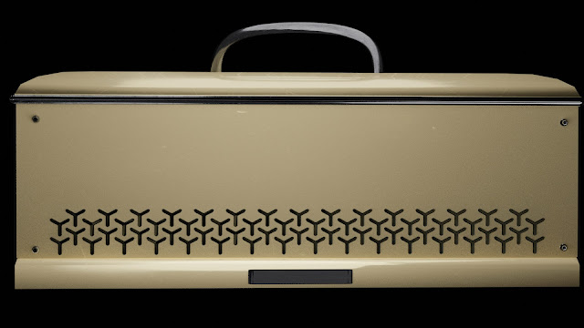
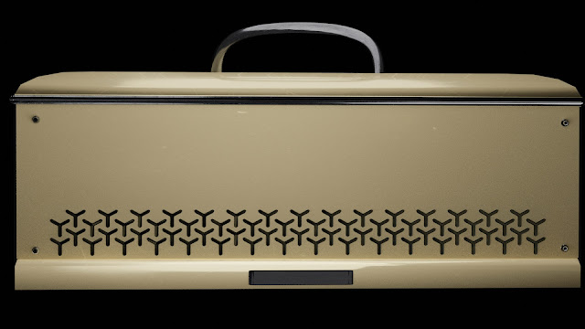

Pour une meilleur explication vaut mieux regarder la vidéo en bas.
Explication du logiciel
Ce logiciel est un VST (Virtual Studio Technology : un plugin audio qui permet soit de générer du son tel que des pianos, des guitares ou des synths virtuelles, ou bien dans mon cas traiter le son pour donner un effet spécial). Ce projet a été developpé en C++ avec une framework qui s'appelle JUCE (similaire a Qt).Cet effet prend la moitié d'une mesure de son et en utilisant l'interpolation cubique l'étire en une mesure entière, ceci résulte en une modification du pitch qui est baissé d'une octave. Ce logiciel possède plusieurs paramètres qui représente la taille de la mesure (la moitié, un quart, un huitième ... d'une mesure), plus le paramètre est petit plus le son est plus dynamique.

Vers
J'ai égalemnt intégré un effet additionel qui représente un chorus. Cet effet est représenté par l'amplificateur de guitar qui se trouve au milieu de la page. La modélisation 3D que j'ai fait a été inspiré par un amplificateur de guitar de la part de chez Yamaha.
 

Dans cet vidéo j'explique et je montre l'effet sur un son.